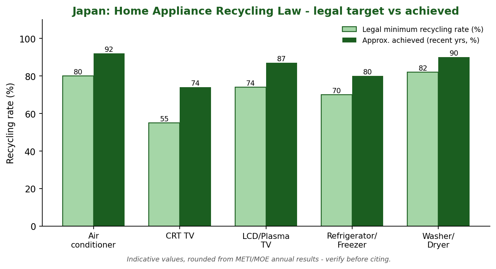
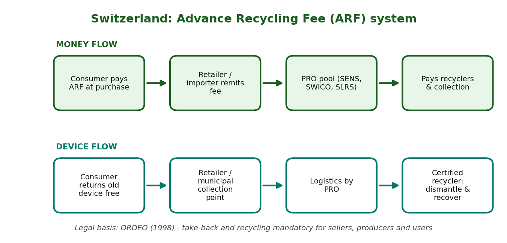
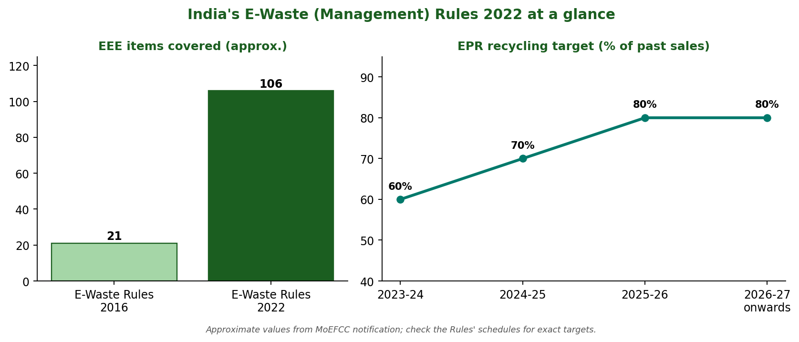
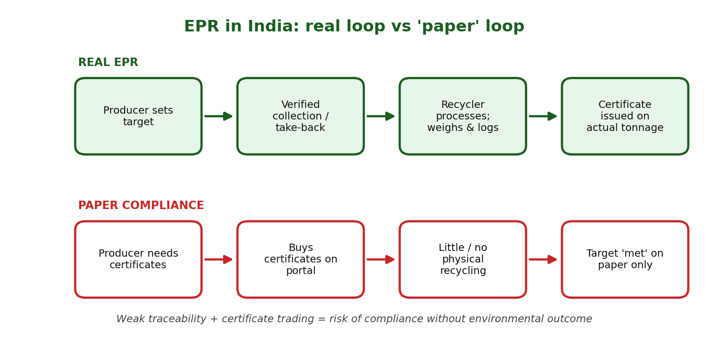
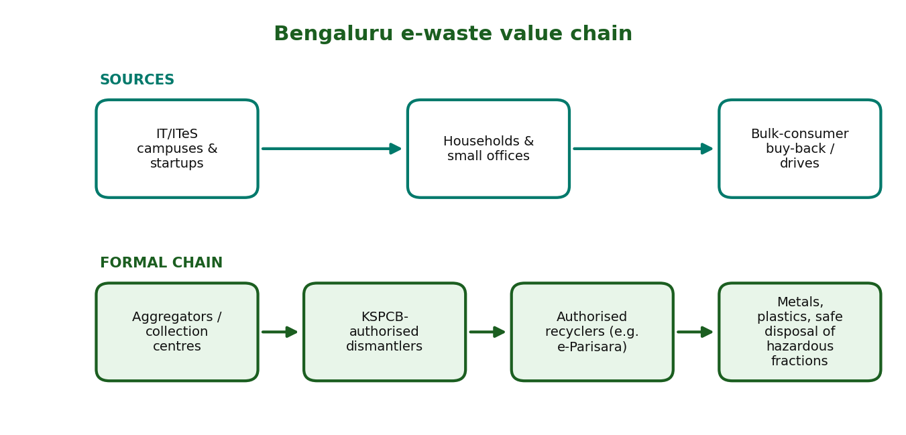
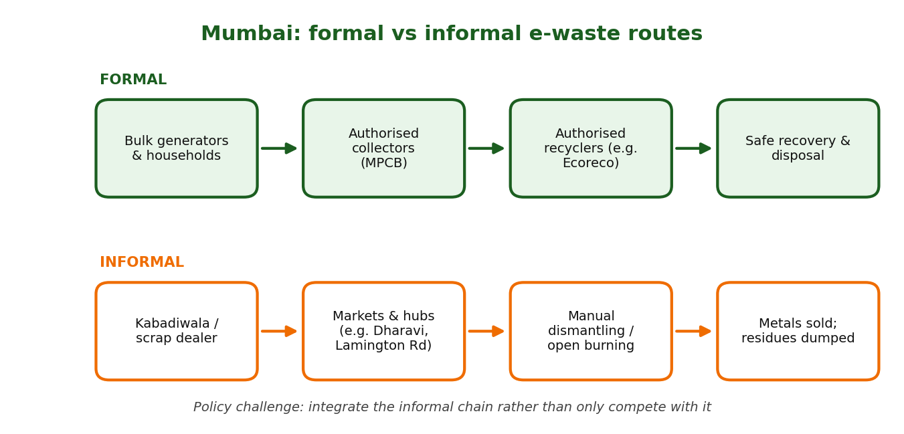
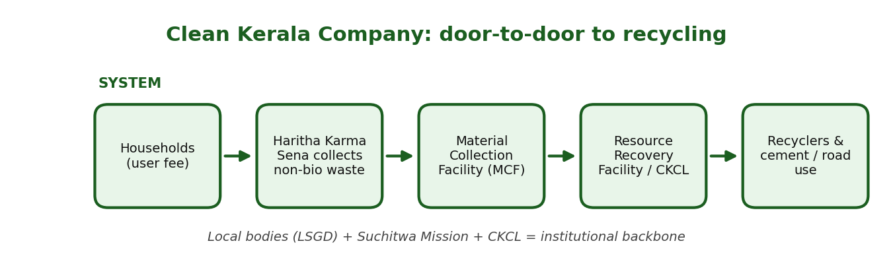
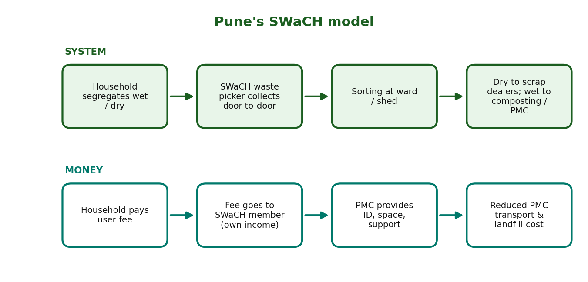
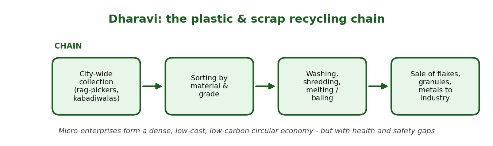
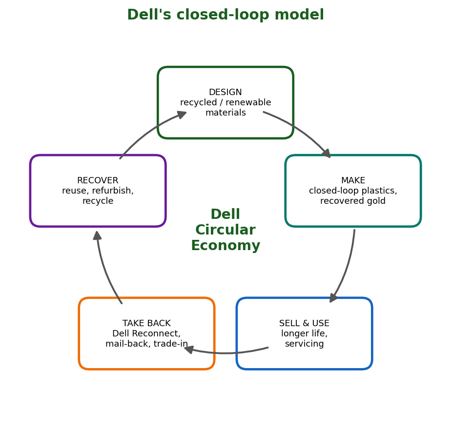

Waste, E-Waste and Circular Economy: 10 Case Studies (TE)
Prepared for Mid-Semester Examination 2 (MSE 2)
| Student Name | Onkar shelke |
|---|---|
| Roll No. | 25102C2002 |
| Course | TE (Case Studies) |
| Class / Division | CMPN C |
| Faculty | Aniket Kundu |
| Submission Date | 4 October 2026 |
Report Structure (for each case)
Executive Summary | Background | Strategy | Impact & Results | SWOT | Comparison with India | Recommendations | Conclusion | References | Revision Sheet
| No. | Case Study | Region |
|---|---|---|
| 1 | Why Japan Recycles More Than Most Countries: Lessons for India | Japan |
| 2 | Switzerland's E-Waste Success Story | Switzerland |
| 3 | India's E-Waste Management Rules 2022 | India |
| 4 | India's Extended Producer Responsibility (EPR): Success or Paper Compliance? | India |
| 5 | Bengaluru: India's E-Waste Capital? | Bengaluru, Karnataka |
| 6 | Mumbai's E-Waste Ecosystem | Mumbai, Maharashtra |
| 7 | Kerala's Clean Kerala Company | Kerala |
| 8 | Pune's SWaCH Model | Pune, Maharashtra |
| 9 | Dharavi Recycling Ecosystem | Dharavi, Mumbai |
| 10 | Dell's Circular Economy Strategy | Global corporation (with India operations) |
Note on data: figures in this report are rounded or indicative and drawn from the cited public sources; please verify exact values and citations against the original documents before final submission.
Region: Japan Theme: Legal framework, segregation culture, product-stream recycling
Japan is widely cited as a model 'sound material-cycle society'. With little land for landfills and almost no natural resources, it built a layered legal system: one basic Act plus separate recycling laws for packaging, home appliances, food, construction waste, vehicles and small electronics. Households segregate meticulously, municipalities collect, and producers are responsible for recycling. The result is very high recovery in specific streams (for example PET bottles and large appliances). Overall, however, Japan still incinerates most municipal waste, so its strength is stream-wise material recovery and behavioural discipline rather than a 'zero-incineration' system.
Japan has about 125 million people on a small, mountainous land area. Landfill capacity became a crisis in the 1990s, pushing the state to move from disposal to the 3Rs (Reduce, Reuse, Recycle).
Key laws: Basic Act for Establishing a Sound Material-Cycle Society (2000); Containers and Packaging Recycling Law (1995, in force 1997); Home Appliance Recycling Law (in force 2001); Food Recycling Law (2000); Automobile Recycling Law (2005); Small Home Appliance Recycling Act (2013); Plastic Resource Circulation Act (2022).

Figure 1: Legal minimum vs achieved recycling rate under Japan's Home Appliance Recycling Law
| Indicator | Data / Result | Significance |
|---|---|---|
| PET bottle recycling rate | Roughly 85-88% in recent years | Among the highest in the world |
| Large home appliances | Achieved rates exceed legal minimums (approx. 74-92% by category) | Producer duty is actually met |
| Landfill (final disposal) | Fell by roughly two-thirds between 2000 and ~2019 | Landfill crisis largely eased |
| Overall municipal waste recycling | About 20%; most of the rest is incinerated with energy recovery | Honest limit of the model |
| Tokyo 2020 medals | About 79,000 t of small devices collected; ~5,000 medals made from e-waste metals | Shows public participation at scale |
Figures are rounded/indicative; verify against the cited sources before quoting in an exam or report.
| Strengths Strong legal architecture, stream by stream High citizen discipline and trust in rules Producer responsibility built in and monitored | Weaknesses Heavy reliance on incineration High cost of collection and sorting Low overall MSW recycling rate (~20%) |
|---|---|
| Opportunities Plastic Resource Circulation Act (2022) can lift plastics Advanced sorting technology, chemical recycling Export of know-how and standards to Asia | Threats Ageing, shrinking population lowers labour for collection Global plastic-waste export restrictions Rising energy and compliance costs |
| Parameter | This case | India / benchmark |
|---|---|---|
| Legal design | Product-specific recycling laws | SWM Rules 2016; EPR under E-waste, Plastic and Battery rules |
| Segregation at source | Universal, culturally enforced | Mandated but weak compliance, mixed waste common |
| Informal sector | Minimal | Large; carries much of actual recycling |
| Disposal pattern | Incineration + high stream recycling | Dumpsites/landfills still dominant for residual waste |
| Enforcement | Fines, manifests, social pressure | Uneven across urban local bodies |
Japan's lesson for India is that high recycling is the product of law, infrastructure and habit working together. India cannot copy Japan's incineration-heavy path or its cost structure, but it can copy the discipline of segregation, stream-specific rules and verified producer responsibility, while building on its informal recycling strength.
Region: Switzerland Theme: Advance Recycling Fee, producer responsibility organisations
Switzerland introduced one of the world's first formal e-waste systems. Manufacturers and importers finance recycling through a visible Advance Recycling Fee (ARF) paid by the buyer at the point of sale, managed by industry-run producer responsibility organisations (PROs). Retailers must take back old devices free of charge and consumers are legally bound to return them. The system delivers high collection per person, transparent financing and traceable, audited recycling.
Until the late 1980s, appliances were landfilled or incinerated, releasing hazardous substances such as mercury, lead and CFCs. Industry launched voluntary schemes: S.EN.S (household appliances) and SWICO (ICT, office and consumer electronics), later joined by SLRS for lighting.
In 1998 the Ordinance on the Return, Taking Back and Disposal of Electrical and Electronic Equipment (ORDEO/VREG) made take-back and recycling legally binding, building on the existing industry systems.

Figure 2: Money flow and device flow in the Swiss ARF system
| Indicator | Data / Result | Significance |
|---|---|---|
| E-waste generated (per person) | About 23 kg per year (Global E-waste Monitor 2020, 2019 data) | Very high consumption level |
| Formal collection (per person) | Roughly 15-16 kg per year | Among the world's highest |
| Total collected | Well over 100,000 tonnes annually | National coverage |
| Material recovery | Most of collected mass recycled (about 75-90% by weight, varies by category) | Metals and glass recovered; hazardous parts safely treated |
| Financing | Self-funded by consumers via ARF, no tax money | Polluter-pays principle applied transparently |
Figures are rounded/indicative; verify against the cited sources before quoting.
| Strengths Transparent, self-financing ARF Industry-run PROs with legal backing Convenient free take-back, strong civic habit | Weaknesses High wealth makes the model costly to copy directly Fee-setting needs constant updating Hoarding of old devices at home |
|---|---|
| Opportunities Extend to new products (solar, e-bikes, batteries) Repair and reuse channels Export standards to other countries | Threats Falling commodity prices reduce recovery revenue Illegal e-waste exports Rapid product miniaturisation and lithium batteries |
| Parameter | This case | India / benchmark |
|---|---|---|
| Finance model | Visible ARF at purchase | EPR costs hidden in price; certificate trading |
| Take-back | Free at every seller | Limited; consumers often sell to kabadiwalas |
| Collection (per person, approx.) | 15-16 kg | Below 1 kg formally (est.) |
| Informal sector | Negligible | Dominant |
| Oversight | Audited PROs and recyclers | Portal-based; verification gaps |
Switzerland shows that clear legal duties, shared financing and convenience produce results. India's lesson is not to copy the fee exactly but to make financing visible, take-back convenient and reporting auditable.
Region: India Theme: Regulation, EPR certificates, scope expansion
The E-Waste (Management) Rules 2022, notified in November 2022 and in force from 1 April 2023, replaced the 2016 Rules. They broaden coverage to over 100 categories of electrical and electronic equipment, create a central EPR portal run by CPCB, introduce tradable EPR certificates with a floor price, set rising recycling targets, and bring refurbishers and solar photovoltaic items into the framework. The rules move India from a producer-pays declaration towards a monitored, market-based EPR system, but success depends on verification and on including the informal sector.
India is among the world's largest e-waste generators. Earlier rules (2011 and 2016) introduced EPR but suffered from low collection targets, weak monitoring and dominance of informal recyclers.
The 2016 Rules covered about 21 categories of equipment. Policy gaps and evidence of poor compliance led to the redesign in 2022.

Figure 3: Scope expansion and EPR targets under the 2022 Rules
| Indicator | Data / Result | Significance |
|---|---|---|
| Products covered | 21 categories (2016) to about 106 items (2022) | Far broader legal reach |
| Institutional design | Central CPCB portal, digital certificates | Improved traceability in principle |
| Recycling targets | 60% rising to 80% of past sales | Higher ambition than earlier rules |
| Actors covered | Producers, manufacturers, refurbishers, recyclers | Refurbishing formally recognised |
| Ground reality | Formal processing still a small share of estimated generation (CPCB ~1.6 Mt in 2021-22) | Implementation gap remains |
Values are approximate; check the notified Rules and CPCB reports for exact numbers.
| Strengths Broad scope and digital tracking Market-based certificates with price bounds Refurbishers recognised | Weaknesses Informal sector not explicitly integrated Certificate fraud risk Data gaps on actual generation |
|---|---|
| Opportunities Growth of authorised recyclers and urban mining Green jobs, critical-mineral recovery Better data through the portal | Threats Continued leakage to informal recyclers Low consumer awareness Enforcement capacity of SPCBs |
| Parameter | This case | India / benchmark |
|---|---|---|
| Approach | Certificate-based EPR with targets | Switzerland: fee + PRO; Japan: law + fee at disposal |
| Coverage | ~106 items | EU: broad categories with collection targets per capita |
| Verification | Portal + audits (improving) | Swiss PROs are audited and traceable |
| Informal sector | Marginal role | Often dominant in India in practice |
| Consumer role | Weak duty, low awareness | Mandatory return in Switzerland |
The 2022 Rules are a substantial upgrade in design. Their impact will be judged by verified tonnage recycled, not by certificates issued.
Region: India Theme: EPR design, verification, fraud risk
EPR makes producers responsible for the end-of-life of their products. India has adopted EPR for e-waste, plastic packaging, batteries and other streams, with a central portal and certificates. The legal architecture is strong, but evidence and regulator actions point to weak physical verification, certificate trading detached from recycling, and risk of 'paper compliance'. The fair verdict: a strong design with uneven implementation, i.e. a partial success that needs tougher, data-driven enforcement.
EPR entered Indian law through the E-Waste Rules 2011, then the Plastic Waste Management Rules 2016 and later the Battery Waste Management Rules 2022 and 2022 guidelines on plastic packaging EPR.
Under the certificate model, a producer buys certificates from recyclers or processors. If the certificate is not tied to verified physical processing, the producer's target can be 'met' without waste actually being recycled.

Figure 4: Real EPR loop versus paper compliance
| Indicator | Data / Result | Significance |
|---|---|---|
| Regulatory reach | EPR now covers e-waste, plastic packaging, batteries and more | Wide policy coverage |
| Digitisation | Registration and certificates on central portals | Better visibility than before |
| Compliance quality | Regulators and researchers have flagged inflated or irregular certificates (2023-25, verify latest CPCB notices) | Risk of paper compliance |
| Recycling outcomes | Formal recycling still limited compared with waste generated | Gap between target and tonnage |
| Informal sector | Not systematically integrated | Leakage and exclusion |
Qualitative evidence table: confirm recent enforcement actions from CPCB/MoEFCC notices before citing specific cases.
| Strengths Comprehensive legal framework Central portal and digital records Polluter-pays principle embedded | Weaknesses Weak physical verification Certificate trading without proof of processing Capacity gaps in regulators |
|---|---|
| Opportunities AI/IoT-based tracking and reconciliation Integration of waste pickers Global market access (green procurement) | Threats Fraud damages trust Industry lobbying against stricter targets Unequal state-level enforcement |
| Parameter | This case | India / benchmark |
|---|---|---|
| Financing | Producers buy certificates | Switzerland: ARF collected upfront; EU: PRO fees with collection targets |
| Verification | Improving but uneven | Audited PROs in Europe/Switzerland |
| Consumer role | Limited | Mandatory return abroad |
| Informal sector | Not integrated | Not central abroad, but central in India |
| Transparency | Portal data partly public | Annual PRO reports in Switzerland |
India's EPR is more than paper, but not yet fully real. It will be a success only when compliance is measured by verified physical recycling and consumer take-back.
Region: Bengaluru, Karnataka Theme: IT hub, formal recyclers, bulk generators
Bengaluru, India's IT and start-up hub, generates large volumes of e-waste from campuses, offices and households, and hosts one of the more developed formal recycling ecosystems in the country, with early authorised recyclers such as e-Parisara. Whether it deserves the label 'e-waste capital' depends on how it is measured: it is a leader in generation and formal infrastructure, yet a substantial share still flows through informal channels.
Bengaluru's technology industry (IT/ITeS, electronics, start-ups) creates constant device turnover. Karnataka State Pollution Control Board (KSPCB) authorises collectors, dismantlers and recyclers under the E-Waste Rules.
Bengaluru Solid Waste Management Ltd (BSWML, 2019) and the municipal corporation handle city waste; e-waste is dealt with through drives, authorised collection centres and corporate buy-back.

Figure 5: Bengaluru's e-waste value chain
| Indicator | Data / Result | Significance |
|---|---|---|
| Generation | Estimated in the tens of thousands of tonnes per year (estimates vary) | Among India's largest city generators |
| Formal capacity | One of the larger networks of authorised recyclers in a single state | Strength of the ecosystem |
| Bulk-generator flow | Corporate disposal largely via authorised recyclers | Cleaner, traceable stream |
| Household flow | Considerable share still to kabadiwalas / informal channels | Leakage remains |
| Innovation | Start-ups and recyclers pilot urban mining and refurbishing | Job and skill creation |
City-level e-waste numbers are estimates; use KSPCB or CPCB figures for exact values in your submission.
| Strengths Large formal recycler base IT sector with corporate compliance capacity Skilled workforce and start-up ecosystem | Weaknesses Household e-waste leakage to informal Low public awareness Pressure on urban land for recycling units |
|---|---|
| Opportunities Urban mining and rare-metal recovery Refurbishing and reuse markets Model for other cities | Threats Rapid growth in devices Illegal dumping and burning on city outskirts Certificate/EPR compliance gaps |
| Parameter | This case | India / benchmark |
|---|---|---|
| Formal recycling infrastructure | Relatively strong | India overall: limited and concentrated in a few states |
| Bulk generator compliance | High for IT firms | Low among SMEs and households nationally |
| Household collection | Drives and drop-offs, patchy | Switzerland: free retailer take-back everywhere |
| Informal sector | Still significant | Dominant nationally |
Bengaluru is India's e-waste capital in generation and in formal infrastructure, but a true capital of good practice would also close the household leakage. The city is a useful pilot for scaling national systems.
Region: Mumbai, Maharashtra Theme: Formal vs informal chains, market hubs
Mumbai, in Maharashtra (a leading e-waste generating state), combines a huge consumer base, dense electronics markets and a large informal recycling economy alongside a smaller network of authorised recyclers such as Ecoreco. The city illustrates India's central challenge: most e-waste is handled informally, cheaply and often unsafely, while formal recyclers struggle to secure enough volume.
Mumbai is a financial capital with high device ownership, big corporate offices and famous electronics markets such as Lamington Road. Estimates of e-waste generation are large (industry estimates commonly exceed a lakh tonnes per year for the metropolitan region) though data differ.
Maharashtra Pollution Control Board (MPCB) authorises collectors and recyclers. Informal hubs in and around Dharavi and other parts of the city dismantle and trade scrap.

Figure 6: Formal and informal e-waste routes in Mumbai
| Indicator | Data / Result | Significance |
|---|---|---|
| Formal recycling | Concentrated in bulk and corporate streams | Traceable but limited volume |
| Informal recycling | Handles a large share of household and small business e-waste | Cheap, fast; unsafe practices |
| Employment | Many livelihoods depend on scrap trade | Social importance |
| Environmental risk | Open burning and acid leaching in unregulated units | Pollution and health hazards |
| Recovery | Formal recyclers recover metals more completely | Higher yield and safety |
Qualitative summary; confirm numbers with MPCB / CPCB before quoting.
| Strengths Huge volume and market density Established formal recyclers Strong scrap-trade skills | Weaknesses Informal dominance Weak household take-back Poor working conditions |
|---|---|
| Opportunities Formal-informal partnerships Take-back at electronics markets Job upgrading and safety training | Threats Toxic exposure Land pressure Competition between formal and informal for scarce e-waste |
| Parameter | This case | India / benchmark |
|---|---|---|
| Generation | Very high, city-level | India: ~1.6 Mt (CPCB 2021-22, all states) |
| Formal share | Low-moderate | Switzerland: nearly all e-waste formal |
| Collection convenience | Doorstep informal wins | Swiss: free take-back at retailers |
| Regulation | MPCB authorisation, EPR portal | Same national law, differing enforcement |
Mumbai's ecosystem shows that policy must work with existing informal networks, not just beside them. Convenience, price and safety together decide where e-waste goes.
Region: Kerala Theme: Local-body led non-biodegradable waste management
Clean Kerala Company Ltd (CKCL) was set up by the Government of Kerala's Local Self-Government Department to manage non-biodegradable (and later e-) waste. Working with local bodies, Haritha Karma Sena (HKS) groups collect door-to-door for a user fee and hand waste to Material Collection Facilities, from where CKCL arranges transport and recycling. The model shows how decentralised institutions can build a functioning collection network.
Kerala has high population density, limited land and a strong tradition of local self-government and women's self-help groups (Kudumbashree). Under the Suchitwa Mission and Haritha Keralam Mission, waste management was decentralised.
CKCL was registered in 2019 as a government company to link local bodies with recyclers and manage plastics, other non-bio waste and e-waste.

Figure 7: Waste flow in the Clean Kerala Company system
| Indicator | Data / Result | Significance |
|---|---|---|
| Collection coverage | HKS present in most local bodies (reported) | Wide network |
| Livelihood | Tens of thousands of women employed as HKS members (reported) | Social benefit |
| Recycling routes | Plastic to recyclers, roads, cement kilns; e-waste to authorised recyclers | Diversion from dumping |
| Financing | User fee + sale of recyclables + local body support | Partial cost recovery |
| Reach of e-waste drives | Periodic campaigns collect tonnes of e-waste | Growing formal channel |
Programme figures are reported values that change yearly; verify with Suchitwa Mission / CKCL reports.
| Strengths Strong local-body and women's-group network Formal institutional backbone User-fee based, decentralised | Weaknesses Uneven performance across panchayats Dependence on subsidy and grants Limited recycling capacity within state |
|---|---|
| Opportunities Scale to e-waste, textiles, sanitary waste Data-driven monitoring Replicable model for other states | Threats Low user-fee compliance Market price swings for plastics Land constraints for MCFs |
| Parameter | This case | India / benchmark |
|---|---|---|
| Institution | State company + local bodies + HKS | India: often municipal contractors |
| Informal integration | Women's groups formalised | Informal often unregistered |
| Financing | User fee + sale | Often municipal budget only |
| Take-back for e-waste | Drives + collection points | Switzerland: full retailer take-back |
Kerala shows that a decentralised, community-based, institutionally supported system can deliver door-to-door collection and linkage to recyclers. Its long-term test is financial sustainability and recycling capacity.
Region: Pune, Maharashtra Theme: Waste-picker cooperative, inclusive solid waste management
SWaCH Seva Sahakari Sanstha Maryadit is a wholly owned cooperative of waste pickers formed in 2008 by the Kagad Kach Patra Kashtakari Panchayat (KKPKP) with Pune Municipal Corporation (PMC). Members collect segregated waste door-to-door for a household user fee, sort recyclables and earn income directly. It is one of India's best-known examples of turning informal waste pickers into recognised service providers.
KKPKP, a union of waste pickers, began organising in the 1990s and won ID cards and recognition from PMC. SWaCH was created to move from unrecognised scavenging to formal service delivery.
Households pay a user fee (revised periodically) directly to the waste pickers; PMC provides space, equipment support and integration in its systems.

Figure 8: Service and money flow in the SWaCH model
| Indicator | Data / Result | Significance |
|---|---|---|
| Members | Several thousand waste-picker members (approx. 3,000-4,000) | Large formal workforce |
| Households served | Roughly a million households (approx.) | City-scale coverage |
| Income | More stable and higher than unorganised picking | Dignity and security |
| Landfill diversion | Substantial reduction in waste reaching dumps | Savings for PMC |
| Recognition | Widely cited as a global good-practice model | Replicable framework |
Values are approximate; verify with SWaCH and KKPKP annual reports.
| Strengths Worker-owned cooperative Strong community trust and door-to-door reach Increases segregation quality | Weaknesses Dependence on PMC contracts User-fee collection challenges Physical hardship of work |
|---|---|
| Opportunities Add e-waste, bulk generator and EPR services Scale to other cities Better sorting infrastructure | Threats Privatisation of collection contracts Contract renewal uncertainty Rising formal competition |
| Parameter | This case | India / benchmark |
|---|---|---|
| Waste-picker role | Owners of a cooperative | India: mostly unrecognised |
| Financing | User fee + recyclables sale | Often only municipal payments |
| Segregation | Improved by direct contact | Poor in most cities |
| Governance | Partnership with municipal body | Often contractor-driven |
SWaCH proves that inclusion improves both efficiency and equity. Its future depends on secure contracts and integration with EPR financing.
Region: Dharavi, Mumbai Theme: Informal circular economy, redevelopment risk
Dharavi, one of Asia's largest informal settlements, hosts a dense recycling economy of thousands of micro-enterprises that sort, wash, shred, melt and trade plastics, metals, paper, cloth and e-waste. Widely quoted estimates suggest it processes a very large share of Mumbai's plastic waste and generates annual turnover of hundreds of millions of dollars. It is a strong example of low-cost circularity, but also of unsafe conditions and vulnerability to redevelopment.
Dharavi covers a few square kilometres in central Mumbai with a population commonly estimated in the several-lakh range. Migrant communities built specialised clusters for plastics, leather, pottery, garments and scrap.
The Dharavi Redevelopment Project (developer selected in 2022) plans large-scale rehabilitation, raising concerns about relocation of businesses and the future of the recycling clusters.

Figure 9: The plastic and scrap recycling chain in Dharavi
| Indicator | Data / Result | Significance |
|---|---|---|
| Micro-enterprises | Thousands of small units (widely quoted 10,000+) | Vast informal industrial base |
| Employment | Large workforce (often quoted in the tens of thousands or more) | Livelihood engine |
| Plastic recycling | Commonly cited as handling a majority of Mumbai's recyclable plastic | Major landfill diversion |
| Turnover | Widely quoted as hundreds of millions of US dollars per year | Economic significance |
| Risks | Fire, toxic exposure, poor sanitation | Need for safer processes |
Dharavi statistics vary widely across sources; treat as indicative and cite the specific study you use.
| Strengths Low-cost and low-carbon recycling Deep skills and networks High recovery of recyclable material | Weaknesses Unsafe working conditions No formal recognition or social security Pollution from unregulated processes |
|---|---|
| Opportunities Formalise clusters with safe industrial spaces Link to EPR compliance and brands Training and technology upgrades | Threats Redevelopment displacing businesses Regulatory crackdowns without alternatives Competition from large formal plants |
| Parameter | This case | India / benchmark |
|---|---|---|
| Recycling model | Dense micro-enterprises | Japan/Switzerland: industrial plants with strict standards |
| Cost | Very low | Formal recycling more costly |
| Safety | Poor | High standards abroad |
| Policy status | Unrecognised | EPR systems formalise actors abroad |
Dharavi demonstrates that circular economy already exists in Indian cities. The policy task is to formalise and upgrade it, rather than erase it.
Region: Global corporation (with India operations) Theme: Corporate circularity, closed-loop materials, take-back
Dell Technologies has set corporate goals to make its products and packaging circular: use recycled, renewable or lower-carbon materials, reuse or recycle an equivalent amount of product for every product sold, and use packaging that is fully recycled or renewable and recyclable by 2030. It supports these with take-back programmes, closed-loop plastics from used electronics, recovered gold from motherboards and ocean-bound plastic in packaging. It shows how a manufacturer can turn EPR into strategy.
As a major PC and server maker, Dell faces EPR obligations and rising e-waste. It has run take-back and recycling programmes for many years, including Dell Reconnect with Goodwill, and reports having recovered billions of pounds of used electronics.
Its sustainability strategy sets 2030 targets and reports progress annually.

Figure 10: Dell's closed-loop circular model
| Indicator | Data / Result | Significance |
|---|---|---|
| Product goal | Over half of product content from recycled/renewable/reduced-carbon material by 2030 | Design-led circularity |
| Take-back goal | Reuse or recycle an equivalent product for every one sold (by 2030) | Full-lifecycle responsibility |
| Packaging goal | 100% recycled or renewable packaging by 2030 | Waste reduction upstream |
| Recovery to date | Billions of pounds of used electronics recovered since 2007 (company-reported) | Scale of take-back |
| Innovations | Closed-loop plastics, recovered gold, ocean-bound plastic | Circular design in practice |
Company-reported figures change annually; verify with Dell's latest ESG / sustainability report.
| Strengths Scale and supply-chain leverage Established take-back and recycling partners Transparent public goals | Weaknesses Reliance on company-reported data Recycled content still a fraction of total Product complexity limits repairability |
|---|---|
| Opportunities Growth of refurbished/'as-a-service' models Regulation (EPR, right-to-repair) favouring circular firms Customer demand for green IT | Threats Volatile recycled-material prices Consumer reluctance to return devices Greenwashing scrutiny |
| Parameter | This case | India / benchmark |
|---|---|---|
| Take-back | Global programmes, EPR-linked in India | India: limited consumer return; informal sale dominates |
| Materials | Recycled and closed-loop | India: recyclers recover metals mostly; less closed-loop use |
| Reporting | Annual ESG report | Few Indian producers publish detailed data |
| Role of EPR | Strategic | Often compliance-driven |
Dell illustrates that circularity can be embedded in design, supply chain and take-back. For India, the lesson is that EPR should become a business strategy, not just a compliance cost.
| Case 1: Why Japan Recycles More Than Most Countries: Lessons for India | Case 1: Why Japan Recycles More Than Most Countries: Lessons for India |
|---|---|
| Must-remember facts Basic Act 2000 sets 3R hierarchy Packaging law 1995/97; Appliance law 2001; Auto 2005; Small appliance 2013; Plastics Act 2022 Consumer pays fee at disposal for appliances Kamikatsu: 40+ categories, zero-waste 2003 PET recycling ~85%+; MSW recycling only ~20% | Likely exam questions Explain how legal design drives Japan's recycling success. Critically evaluate: 'Japan should be India's model.' Suggest 4 policy transfers from Japan to India. |
| Key terms: 3R, Sound Material-Cycle Society, EPR, manifest system, Kamikatsu, thermal recovery | Hook: Japan = Law + Segregation + Shared responsibility. |
| Case 2: Switzerland's E-Waste Success Story | Case 2: Switzerland's E-Waste Success Story |
|---|---|
| Must-remember facts ORDEO 1998; PROs: SENS, SWICO, SLRS ARF paid by buyer at purchase Free take-back by every seller Collection ~15-16 kg/person Audited, certified recyclers | Likely exam questions Explain the ARF mechanism with a diagram. Compare Swiss and Indian e-waste systems. Can India adopt ARF? Discuss. |
| Key terms: ARF, PRO, ORDEO, take-back, polluter pays, traceability | Hook: Swiss = Pay upfront, return free, recycle audited. |
| Case 3: India's E-Waste Management Rules 2022 | Case 3: India's E-Waste Management Rules 2022 |
|---|---|
| Must-remember facts Notified Nov 2022; effective 1 Apr 2023; replaces 2016 Rules ~106 EEE items (was 21) CPCB EPR portal; certificates with floor/ceiling price Targets ~60/70/80% Refurbishers and recyclers registered | Likely exam questions Explain the key features of E-Waste Rules 2022. How do the 2022 Rules differ from 2016? Evaluate the certificate system. |
| Key terms: EPR, EPR certificate, refurbisher, CPCB portal, floor price, environmental compensation | Hook: 2022 = Wider scope + Digital portal + Tradable certificates. |
| Case 4: India's Extended Producer Responsibility (EPR): Success or Paper Compliance? | Case 4: India's Extended Producer Responsibility (EPR): Success or Paper Compliance? |
|---|---|
| Must-remember facts EPR: 2011 e-waste rules; PWM 2016; Battery 2022 Certificate model + CPCB portals Main risk: paper compliance / fake certificates Verdict: strong design, uneven implementation | Likely exam questions 'EPR in India is paper compliance.' Discuss. Suggest reforms to make EPR verifiable. Compare Indian EPR with Swiss ARF. |
| Key terms: EPR, PRO, certificate trading, traceability, paper compliance, polluter pays | Hook: EPR works only when certificate = verified tonnage. |
| Case 5: Bengaluru: India's E-Waste Capital? | Case 5: Bengaluru: India's E-Waste Capital? |
|---|---|
| Must-remember facts IT hub; KSPCB authorises recyclers e-Parisara: early authorised recycler BSWML formed 2019 Strong formal chain for bulk generators Household leakage remains | Likely exam questions Is Bengaluru India's e-waste capital? Argue. How can Bengaluru fix household leakage? Compare Bengaluru with Mumbai. |
| Key terms: KSPCB, bulk generator, authorised recycler, urban mining, informal leakage | Hook: Bengaluru = IT hub + formal recyclers + household gap. |
| Case 6: Mumbai's E-Waste Ecosystem | Case 6: Mumbai's E-Waste Ecosystem |
|---|---|
| Must-remember facts Maharashtra is a top e-waste state; MPCB regulates Informal hubs incl. Dharavi; Lamington Road market Ecoreco: authorised recycler Main issue: informal dominance | Likely exam questions Discuss formal vs informal e-waste in Mumbai. How can Mumbai formalise scrap trade? Compare with Bengaluru. |
| Key terms: MPCB, informal sector, kabadiwala, authorised recycler, open burning | Hook: Mumbai = High volume + informal dominance. |
| Case 7: Kerala's Clean Kerala Company | Case 7: Kerala's Clean Kerala Company |
|---|---|
| Must-remember facts CKCL: govt company (LSGD), 2019 Haritha Karma Sena: women door-to-door collectors, user fee MCF and RRF network Plastic to roads and cement; e-waste drives | Likely exam questions Describe the CKCL model. Evaluate strengths and limits of HKS. What can other states learn? |
| Key terms: CKCL, HKS, MCF, RRF, Suchitwa Mission, Kudumbashree, user fee | Hook: CKCL = Local body + Women's groups + Recyclers. |
| Case 8: Pune's SWaCH Model | Case 8: Pune's SWaCH Model |
|---|---|
| Must-remember facts SWaCH formed 2008 with KKPKP and PMC Worker-owned cooperative of waste pickers Household user fee; door-to-door Recognised as global best practice | Likely exam questions Explain the SWaCH model. How does SWaCH benefit PMC? Suggest scale-up strategies. |
| Key terms: SWaCH, KKPKP, PMC, cooperative, user fee, inclusive SWM | Hook: SWaCH = Waste pickers as owners, not scavengers. |
| Case 9: Dharavi Recycling Ecosystem | Case 9: Dharavi Recycling Ecosystem |
|---|---|
| Must-remember facts Informal recycling hub in Mumbai Thousands of micro-enterprises; hundreds of millions USD turnover (quoted) Plastic, metal, paper, cloth, e-waste Redevelopment risk to recycling units | Likely exam questions Explain Dharavi's recycling chain. Pros and cons of informal recycling. How to protect Dharavi's recyclers in redevelopment? |
| Key terms: informal circular economy, micro-enterprise, redevelopment, formalisation, kabadiwala | Hook: Dharavi = Circular by necessity, unsafe by neglect. |
| Case 10: Dell's Circular Economy Strategy | Case 10: Dell's Circular Economy Strategy |
|---|---|
| Must-remember facts 2030 goals: >50% recycled/renewable content; reuse or recycle equivalent product per sale; packaging 100% recycled/renewable Closed-loop plastics and recovered gold Dell Reconnect (with Goodwill) Company-reported data | Likely exam questions Explain Dell's circular economy strategy. How can Indian firms adopt such strategies? Evaluate risk of greenwashing. |
| Key terms: circular economy, closed loop, take-back, EPR, ocean-bound plastic, ESG | Hook: Dell = Design, recover, reuse, report. |